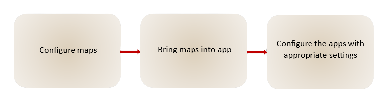

A primary objective of Safari Consulting was to help visitors and staff easily navigate the campus and the surrounding areas. These navigation solutions needed to be available even when network service was not. Several solutions were produced to achieve this objective.
Navigation Solutions
Overview
Methodology
To support both online and offline navigation of the SAWC campus, the team created several solution options. Each of the options followed the same general workflow, which initially started by configuring a map in ArcGIS Online or Pro with the appropriate layers and customized base map, then brining the map(s) into an application which was either an AcrGIS Experience Builder, Field Maps or Microsoft publisher, and finally configuring and formatting that map and application with the appropriate settings.

General workflow to create the navigation solutions.
For the public-facing solutions, hosted feature layer views were created to display data with sensitive attributes. For example, Fire Extinguisher data had records outside of the campus and fields describing when the equipment was last serviced, which was information the public did not need to know. Setting visibility extents and deleting sensitive fields, we were able to make the Fire Extinguisher layer appropriate for public consumption.
Results
The use of offline web maps in Field Maps, with the generic data collection layers and applicable provided spatial data included, helped the team collect new records and verify existing records across the 83-acre campus Some in-field collection took place with members of the SAWC staff to locate and contextualize points of interest, and to better understand the use-case for data. Sufficient spatial data was gathered from the client and cleaned to support the remaining deliverables.

Various points of data collected across the campus using ArcGIS Field Maps, displayed overtop Esri's standard imagery basemap.